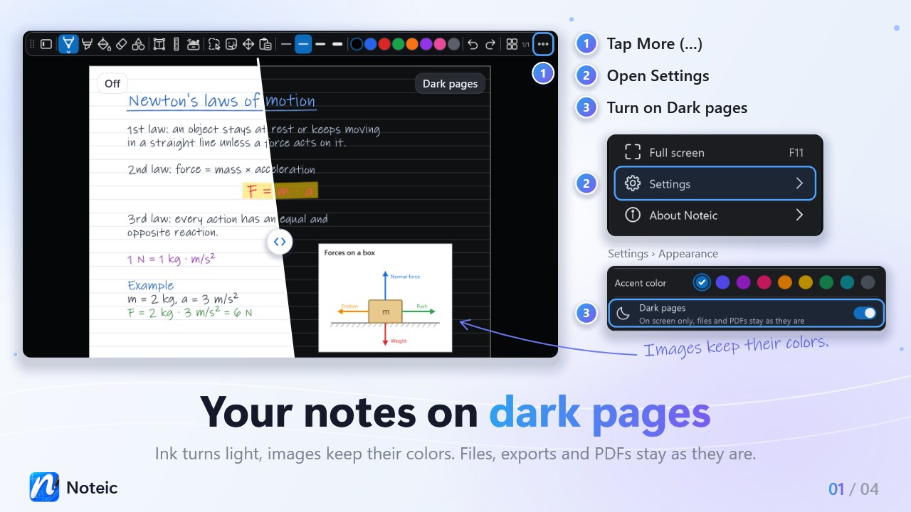

Dark pages New in 1.6
Show your pages dark on screen. The paper turns dark, your ink turns light and images keep their colors. Files, exports and PDF pages stay as they are.

Turn on dark pages#
- Open … (More) at the end of the toolbar.
- Tap Settings.
- Under Appearance, turn on Dark pages.
Every Noteic window switches right away, and Noteic remembers your choice. Switching changes nothing in your note: no star in the tab and nothing to undo.
Dark mode or dark pages?Dark mode colors Noteic itself: toolbar, menus and library. Dark pages color your pages. The two are separate, so you can use either one or both.
What changes on screen#
- Paper: light paper turns dark, and its lines and margin line follow.
- Ink: black and other dark ink turns light and keeps its hue, so dark blue becomes light blue. Ink that is already light stays as it is.
- Highlighter stays see-through and shows a little stronger.
- Filled shapes and text highlights turn into dark tints of their color, so light writing on them stays easy to read.
- Colors in the toolbar and in the color menus show each color as it looks on the page.
- Ruler and protractor follow the dark paper, and the page overview shows your pages dark too.
What stays as it is#
- Images keep their colors.
- PDF pages and pages with an image as paper stay as they are, and so does your ink on them.
- Memo tape keeps its colors.
- Pages with dark paper: a page whose paper you set to a dark color yourself stays as it is, with all its ink.
While you edit a text box, it shows its real colors on a small card in the original paper color. When you close it, it goes dark again.
Files and exports#
Dark pages are only a way of showing your notes. The file keeps the real colors, and a new stroke is saved in the color you picked, not in the color you see.
- Export as PDF always uses the original colors.
- The picture Noteic puts on the clipboard when you copy has the original colors too.
- The thumbnails in the library show the original colors.
- The setting belongs to your Noteic, not to the note. On another PC, your note looks the way Noteic is set up there.